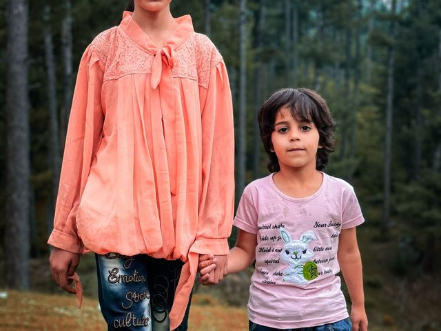
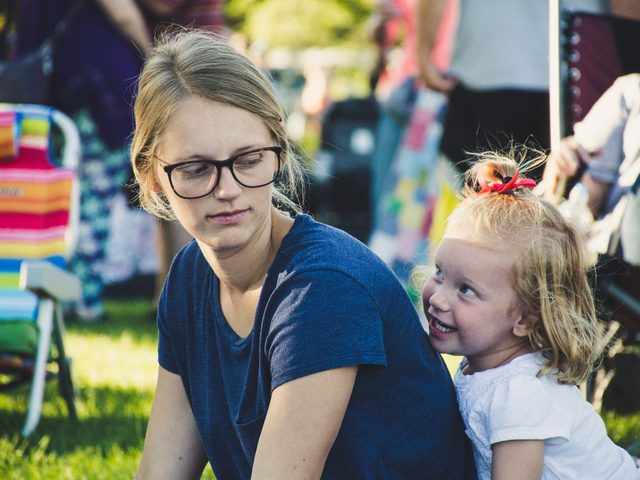

VOCABULARY · 主題 2000 字 PART 2 UNIT 6
Family．家庭
進階的家庭用字，共 6 個：哥哥姊姊、孫子孫女、姪子姪女，以及結婚。
共 6 個單字．點 🔊 聽發音

1elderadj.
年紀較大的
elder brother／sister 哥哥／姊姊（只放名詞前）
My elder sister is in senior high school.我姊姊讀高中。

2granddaughtern.
孫女；外孫女
grand + daughter
Grandma knits a sweater for her granddaughter.奶奶幫孫女織毛衣。

3grandsonn.
孫子；外孫
grand + son
The old man plays chess with his grandson.那位老先生和孫子下棋。

4nephewn.
姪子；外甥
兄弟姊妹的兒子
My uncle's son is my cousin, not my nephew.我叔叔的兒子是我的堂兄弟，不是姪子。

5niecen.
姪女；外甥女
兄弟姊妹的女兒
Aunt Mary bought a doll for her niece.瑪莉阿姨買了一個娃娃給她的姪女。
6marryv.
和…結婚；嫁；娶
marry + 人（不加 with）；get married 結婚；married 已婚的
My cousin will marry his girlfriend next spring.我表哥明年春天要和女朋友結婚。
FOCUS
家人怎麼叫
| 關係 | 英文 |
|---|---|
| 兒子的兒子／女兒 | grandson／granddaughter |
| 兄弟姊妹的兒子 | nephew |
| 兄弟姊妹的女兒 | niece |
| 叔伯姑舅的孩子 | cousin |
marry 後面直接接人：She married Tom.（不說 married with）；「結婚了」說 be married／get married。